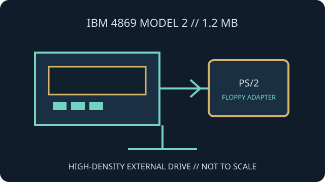

[ INDIVIDUAL COMPONENT // FLOPPY DRIVES ]
IBM 4869 Model 2 External Diskette Drive
The IBM 4869 Model 2 is the 1.2 MB high-density 5.25-inch member of IBM's external PS/2 diskette-drive line. It uses a dedicated external-drive arrangement rather than the normal internal PC ribbon connection.

IDENTIFICATION NOTE: This record describes the Model 2 (commonly 4869-002, with regional suffixes), not the 360 KB Model 1. Confirm exact voltage, part number and adapter requirements from the enclosure and IBM-compatible host documentation.
Model specifications
| Catalog subcategory | External floppy mechanisms |
|---|---|
| Exact model / capacity | IBM 4869 Model 2 / 4869-002 class, 5.25-inch, 1.2 MB high-density configuration. |
| Enclosure | External desktop diskette unit with dedicated data cabling and power arrangement. |
| Host interface | IBM-specific cable with a compatible PS/2 5.25-inch disk adapter; not a direct PC 34-pin floppy cable. |
| Media / format | 5.25-inch high-density diskette format; reading older double-density disks depends on drive, adapter, BIOS and software support. |
| Host compatibility | Use with the IBM PS/2 external-drive adapter arrangement documented for this model. Similar IBM external-drive housings do not imply identical disk capacity. |
Model-specific compatibility checks
- Check whether the unit is 4869-002 or a regional suffix before connecting AC power.
- Verify the adapter card and host BIOS can support the 1.2 MB drive and intended media; a correct cable alone is insufficient.
- Do not assume the Model 2 can reproduce every 360 KB disk reliably; check the exact drive/controller behavior and source format.
Preservation and service notes
Record enclosure, mechanism, FRU and adapter identifiers. Avoid opening the power section without appropriate service documentation and electrical precautions.
Start with expendable media and a verified imaging path. Keep original disk images, logs and any conversion products distinct.
Manufacturer documentation & sources
- 4869-002 — Ardent Tool of CapitalismModel-specific page describing the 1.2 MB IBM 4869 Model 2 and related hardware.
- The Centre for Computing History — IBM 4869 External Disk DriveMuseum record for the external-drive product family; check model suffixes against the physical unit.
Use a model-specific adapter and source manual for all interface, format and service decisions.